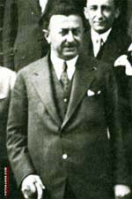

Þükrü Kaya (1883-1959)

Tek Parti döneminde uzun süre milletvekilliði ve bakanlýk yaptý. Ýçiþleri bakaný iken yapýlan seçimlerde kendi partisinin seçimi kazanmasý için her yola baþvurdu. Bakanlýðý boyunca muhalefete göz açtýrmadý. Uyguladýðý baský Meclis gündemine getirilerek sert eleþtirilere konu oldu. Baþta Bediüzzaman olmak üzere, mütedeyyin insanlar aleyhine kararlar aldýrmak için mahkemelere müdahale edecek kadar baský kurma yoluna gitti.Kaya, 1883 yýlýnda Ýstanköy Adasýnda doðdu. Midilli Ýdadisini bitirdikten sonra Galatasaray Lisesi'ne girdi. Daha sonra Paris'e giderek Hukuk Fakültesini okudu. Yurda döndükten sonra Dýþiþleri Bakanlýðýnda çalýþmaya baþladý. Kýsa bir süre sonra Ýçiþleri Bakanlýðýna geçerek Mülkiye Müfettiþliði görevinde bulundu. Balkan Savaþý sonrasýnda Bulgarlarla oluþturulan Mübadele Komisyonunda görev aldý. 1916 yýlýnda Ýskan-ý Muhacirin ve Aþayir Müdürlüðüne atandýysa da bu görevi kýsa sürdü.
Bir süre Anadolu ve Irak'ta Mülkiye Müfettiþliði yaptýktan sonra görevinden istifa etti. Akabinde Ýzmir'e giderek burada ve Buca'da öðretmenlik yaptý. Mondros Mütarekesinden sonra, iþgallere karþý kurulan Ýzmir Müdafaa-i Hukuk Cemiyetine girdi. Bir ara tutuklanarak Ýstanbul'a ve bilahare Malta'ya sürüldü. Kýsa bir sürgün hayatýndan sonra yurda döndü. Lozan görüþmeleri sýrasýnda danýþmanlýk yaptý.
Kaya, 1923-27 yýllarýnda Ýzmir Belediye Baþkanlýðý yaptý. Akabinde Muðla milletvekili olarak meclise girdi. Bu tarihten itibaren uzun süre muhtelif bakanlýklarda bulundu. Ýsmet Ýnönü, Fethi Okyar ve Celal Bayar tarafýndan kurulan hükümetlerde bakan olarak yer aldý. Tarým, Dýþiþleri ve Ýçiþleri bakanlýklarýnda bulundu. Bunlarýn dýþýnda 1936-38 yýllarýnda Cumhuriyet Halk Partisi Genel Sekreterliði de yaptý.
Kaya, Ýsmet Ýnönü'nün Cumhurbaþkaný olmasýna karþý çýkýnca, siyasi hayatý kararmaya baþladý ve 1939 seçimlerinde aday bile gösterilmedi. Bu tarihten itibaren siyasi hayatý sona erdi. 1959 yýlýnda Ýstanbul'da öldü.
Muhalefete ve kendisi gibi düþünmeyenlere hayat hakký tanýmayan CHP hükümetleri, "kendimizin olmayan ve kendimiz için olmayan bütün düþünce akýmlarýna karþý uyanýk durmak ve savaþmak" prensibini politikalarýnýn temeline yerleþtirdiler. Kendilerine göre zararlý kabul ettikleri düþünce akýmlarýna karþý, devlet kurumlarýný sýký sýkýya kapalý tuttular. (Ýsmail Kaplan, Türkiye'de Milli Eðitim Ýdeolojisi, Ýletiþim, s. 161-162) Ýflas eden politikalarýndan dolayý kurdurulan Serbest Fýrka'nýn giderek büyümesi, CHP'nin iktidarýný korumasý için gayrimeþru yollara baþvurmada sakýnca görmedi. Bu sýralarda aktif olarak çalýþanlardan biri de zamanýn Ýçiþleri Bakaný Þükrü Kaya'dýr. 1930 yýlýnda yapýlan seçimlerde, halkýn iradesinin hür bir þekilde tecelli etmesine yardýmcý olmasý gerekirken, bakanlýðý ve baðlý tüm kurumlarý, seçimi CHP'nin kazanmasý için seferber etti. Baþta bakan olmak üzere valiler, kaymakamlar, nahiye müdürleri, polis ve jandarma Serbest Fýrkanýn seçimi kaybetmesi ve CHP'nin kazanmasý için ellerinden geleni yaptýlar. Fethi Beyin seçim yolsuzluklarýný Meclise taþýmasý da herhangi bir iþe yaramadý. (Osman Okyar-Mehmet Seyitdanlýoðlu, Fethi Okyar'ýn Anýlarý, Türkiye Ýþ Bankasý Yay., s. 77) Kaya, kendisi aleyhinde yapýlan eleþtiri ve ithamlara karþý hâlâ kullanýlmakta olan "irtica" silâhýna sarýldý. Ona göre Fethi Bey ve arkadaþlarý arasýnda, irtica ile mahkum olmuþ, millete ihanette bulunmuþ, ihanet ve hilafet konularýna girmiþ adamlar vardý. Fýrkaya üye olanlar hakkýnda ithamlarda bulundu. Bakanýn konuþmasýndan önce çok sayýda milletvekili kürsüye çýkarak büyük bir baský oluþturdular. (Fethi Okyar'ýn Anýlarý, s. 172) Fethi Bey'in verdiði cevap ise, irticayý diline dolayanlarýn gerçek maksatlarýný ortaya koymaktadýr:
"Serbest Fýrka'dan evvel, bütün memleket halkýnýn hükümetten memnun olduðu tarzýnda sözler söyleniyordu. O zamanlar hükümetten memnun olan halk, belediye seçimlerinde neden birden bire mürteci oluverdi? Bu irtica nasýl göründü? Halk laikliði istemiyoruz, halifeyi istiyoruz mu dedi? Hayýr efendiler, halkýn davranýþýný irtica olarak takdim edenler, halkýn reyini inhisar altýna almak isteyenlerdir." (Fethi Okyar'ýn Anýlarý, s. 81)
Kaya, sadece muhalifi olan siyasilere baský kurmakla kalmadý. Baþta Bediüzzaman Hazretleri olmak üzere, onun Ýçiþleri Bakaný olduðu dönemde çok büyük sýkýntýlara maruz kaldýlar. Ýrtica bahanesiyle dindar insanlara nefes aldýrýlmadý. Bediüzzaman, çýkarýldýðý mahkemelerde uðradýðý baský ve zulümleri dile getirmeye çalýþtý. Ancak, vatandaþýn hakkýný korumak ve kollamakla görevli yöneticilerin yaptýklarý karþýsýnda, biraz da alaycý bir tavýrla, eleþtirilerde bulundu. Bir savunmasýnda, Kaya'nýn icraatlarý ile ilgili olarak bir hikaye anlatarak savunmasýna baþlar: Hasta olan bir padiþah için, ilaç olarak bir çocuðun kaný gerekmektedir. Bu durum karþýsýnda babasý belli bir para karþýlýðýnda, oðlunun feda edilmesine razý olur; hakim de fetva vererek çocuðun feda edilmesine yardýmcý olur. Çocuk, olanlar karþýsýnda, tepki göstereceðine gülmeye baþlayýnca sebebi sorulur. Çocuk bunun üzerine þöyle der: "Ýnsan bir belâya düþtüðü zaman önce babasýndan, akabinde hakimden, sonra da padiþahtan medet umar. Oysa ki, babam beni para için satýyor, hakim ölümüme karar veriyor, padiþah da kanýmý istiyor." Hikâyeden sonra da þunlarý söyler:
"Ýþte, ey Þükrü Kaya Bey, biz de o çocuk hükmüne geçtik! Derdimizi, evvel mahallî hükümetteki valiye, sonra mahkeme adaletine, sonra Dahiliye Vekaletine müracaat edip mazlumiyetimizi beyan ederek zalimlerden bizi kurtarmak için arzuhal etmek mukteza-i hal iken, gördük ki, en son þekvamýzý dinleyecek Dahiliye Vekilinin hakkýmýzda kapýldýðý asýlsýz evhamýna bir hakîkat rengi vermek ve hatasýný örtmek fikriyle hatasýnda ýsrar etmesi daha büyük bir hata olduðunu düþünmediðinden, dûçar olduðu gurur hastalýðýna, kanýmýzý isteyerek, bizi asýlsýz bahanelerle periþan etmek istiyor." (Tarihçe-i Hayat, s. 209)
Fethi Okyar'ýn TBMM oturumlarýnda dile getirdiði gibi, Bakan komplo üretmekte çok mahir idi. Bediüzzaman ve talebeleri mahkemeden mahkemeye sürüldükleri, beraat ettikleri halde sürekli yeni iddialarla hapse atýldýklarýna raðmen, hiçbir olaya sebebiyet vermediler. Buna karþýlýk Kaya, kendisi ile beraber Ankara'dan yüz jandarma, çok sayýda polisi alarak Isparta'ya gitti. Bir iki askerle yapýlabilecek bir iþi, büyük bir olay varmýþ gibi bir havaya büründürerek hareket etmesi, icraatlarýnýn önemli göstergelerindendir. Halbuki, bir neferin teblið etmesi halinde, hiç itiraz etmeden mahkeme ve hapishanelerin yolunu tutan Bediüzzaman'a karþý yapýlanlarýn hiçbir gerekçesi yoktu.
Kaya'nýn yaptýklarýný mahkemede dile getiren Bediüzzaman; "Þükrü Kaya'nýn þahsýný, Dahiliye Vekili olan Þükrü Kaya Beye þekva ediyoruz" demek suretiyle çok ilginç bir savunma örneðini sergiledi. Hiçbir tesir altýnda kalmadan vicdanlarýyla hareket etmeleri gerektiðini belirttiði mahkemeye; "Þükrü Kaya Beyin þahsý hakkýnda dinleyeceklerini bilseydim, en evvel biz, Þükrü Kaya'nýn þahsý aleyhine ikame-i dava edecektik" diyerek sözlerini sürdürdü. "Çünkü, bir seneden beri, her gün veya her hafta hakkýmýzda rapor isteye isteye, aleyhimize casuslarýn, zabýtalarýn nazar-ý dikkatini celb ettirip, kurban koyunu gibi kesmek için bizi beslettiriyordu. Mahkeme ise, adaletten baþka hiçbir þey düþünmemek lazým gelirken ve hakîkaten mahkeme içindeki zatlar da adalete tam baðlý olduklarý halde, yüksek makamdaki Þükrü Kaya gibi þahsýn tesiratýna karþý dayanamadýklarý için, bizi tahliye edemeyip süründürüyorlar. Mahallî hükûmet olan Isparta valisi ve zabýtasý ise, herkesten ziyade bizi ve Ispartalý bîçare, masum mevkuflarý himaye etmek ve bir an evvel kurtulmasýna sa'y etmeleri vazife-i vicdaniyeleri iken, bilakis çok manasýz ve asýlsýz bahaneler ile Isparta mevkuflarýnýn, husûsan muhtaç ve fakirlerin tayinlerini verdirmeyip, açlýkla sefalete düþmeleri için onlarý ezdirmeye çalýþýyorlar. Ýþte bu hale þekva deðil; belki, aðlamanýn nihayet derecesini gösteren bu acý hale, o çocuk gibi gülmek ile mukabele ediyoruz ve tevekkül edip, iþimizi Azîz-i Cebbara havale ediyoruz." (Tarihçe-i Hayat, s. 210)